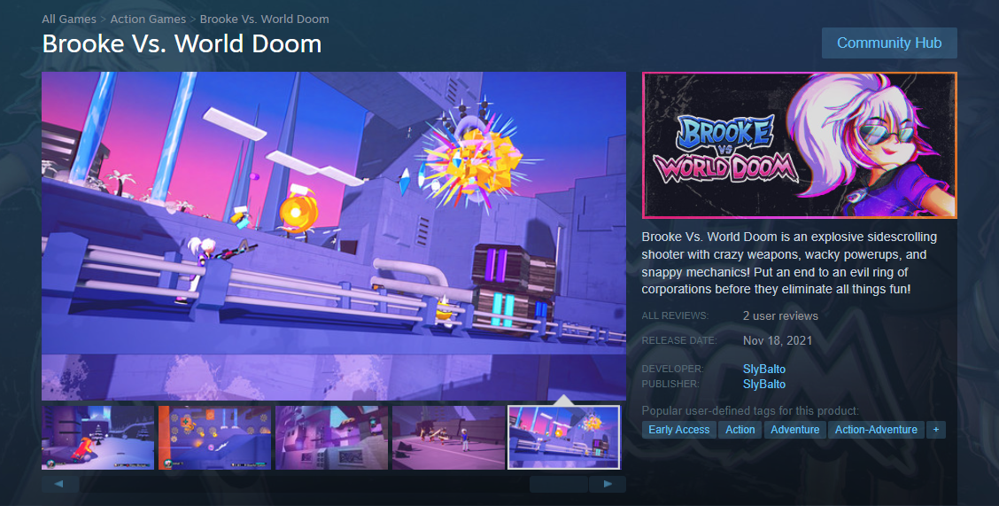

In the Beginning
When I entered high school, I wanted to design and develop video games. I became a creative throughout my high school years. I loved coming up with wacky worlds and sharing them with others. Eventually, I turned 20. I began to take the possiblity of a game design career a lot more seriously. I attended Webster University that fall and the next semester I started a student project that would be my personal work for the next 5 years.
I found time to work on the game in between classes and my day job. Progress was slow, I wasn't motivated to learn new things all those years ago, and didn't really take the project that seriously for a while, but knew I liked working on it. Along the way, I came up with a username so people could better find and remember my work; SlyBalto.
The Atomic Age
I named my game Brooke Vs. World Doom, starring Brooke Atomica, a spunky partygoer on a mission to save the world. A simple premise, but the gameplay had a lot of moving parts, maybe even too many.
I got serious about the game, taught myself everything from graphic design to 3D modeling, writing and posting social media posts. I took in lots of feedback from curious players and fellow devs and build my skills. I had some friends help with some various aspects, including writing music and some help with animation and art, but I handled all of the rest: game design, the graphics, artstyle, the mechanics, you name it.
On November 18th, 2021, Brooke Vs. World Doom launched onto the video game distribution platform Steam through its Early Access program, where players could get their hands on the game and give useful feedback while it's still being worked on, creating a strong relationship between the creators and the players.

One thing Webster didn't teach me is how to get yourself out there on social media, so I had to rely on studying what worked and what didn't and learning by example. My posts never caught that much attention, but I wasn't in it for the likes, I just wanted to meet other devs and get some feedback. I learned it was far better to connect on apps like Discord with players and other developers, so I slowly stopped taking the time to make posts and instead directly met with like-minded creaters, only posting to Twitter to share clips/videos in case anyone was curious about my content backlog.
There were a number of test projects that came and went as the years went on, but this was the work that I continued the longest. I spent long hours fixing issues, but it seemed like it was a never ending mess of glitches, balance issues, missing quality of life features, little to no social media presence, and jumbled game design choices. I had bitten off far more than I could chew.
Brooke became a chore: wake up, fix things for Brooke, eat, fix things for Brooke, check my inbox and see that it's empty, sleep, repeat. I knew I couldn't live like this. This wasn't fun, I wasn't creating anything, nothing was going anywhere, so I slowly stopped working on it.
Currently, Brooke Vs. World Doom sits quietly on Steam, forgotten by the few that gave the game a chance and the very person who made it. What was meant to be a career kickstarter never took off, but at the same time, I've learned an incredible amount along this journey, and I think that's far more valuable than higher performance numbers.
Often times I think of the possible outcomes: what if the game suddenly did take off? Would I have been prepared? What if a Kickstarter or IndieGoGo campaign was created, and it actually reached its goal, would the project be completed on time with the quality I hoped to bring? With my inexperience with producing a project, let alone simply completing one at all, it's clear things would've gotten real messy. I've learned a lot on my journey, and who knows, maybe I'll be able to work on Brooke again one day. After I had stepped off the path with developing Brooke, I found another; JavaScript.
JavaScript Chronicles
The new path I took brought me into the world of HTML, JavaScript, and VSCode. Both of my parents worked as programmers before, it's in my blood to code. To me it's an artform. Creating things never gets old.
I continue to work during my spare time on a tiny, but exciting project Crazy Kitchen, which has been far easier (and lots more fun) to create alongside friends. Changes are far easier to implement and try out with it being far tinier than Brooke.
I learned some CSS and HTML before eventually finding out about Launchcode, a coding bootcamp that's been teaching me JavaScript. So far, it's been challenging, but the best kind. I'm excited to see what happens next!
Things are looking up. I'm on a journey to become a programmer like my parents before me. I've become far more interested in learning and giving new things a try. The future is looking bright!